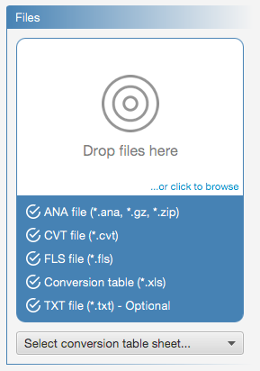

From within the Add Spectrum panel, you can drag & drop or browse for the spectrum files to add. A spectrum file set contains ANA, CVT, FLS,
conversion table and optionally, TXT file.(1)
After the conversion table is selected, it is also required to select the relevant worksheet as shown in the following figure.

Notes: (1) If TXT file is not supplied, it will be generated automatically from CVT file and conversion table.